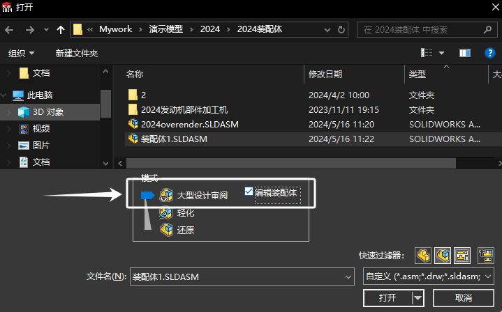
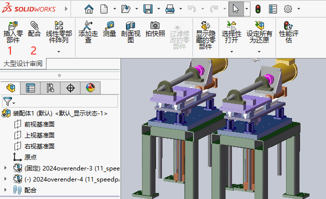
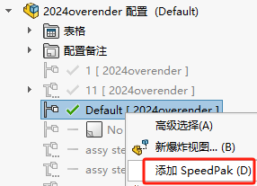
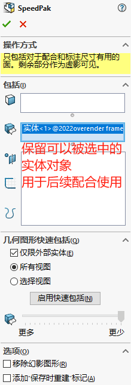
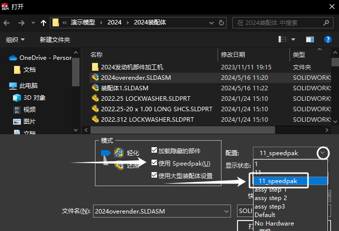

大型装配体保存失败

方法1大型设计审阅
1、新建空白装配体文件，并保存关闭；
2、使用编辑模式的【大型设计审阅】打开刚才的空白装配体；
3、在装配体使用【插入零部件】将部件加载到装配体内，并做好配合
4、保存操作即可
方法2Speedpak
1、打开部件装配体
2、在装配体配置中【右键-创建Speedpak】，并选择保留的几何对象（可以是实体、面等），以便后续做配合选择使用。没有保留的部分，将保留视觉效果并不能被选择。
 3、打开总装配体文件，操作【插入零部件】将前面的Speedpak部件插入总装文件中进行配合操作
4、保存操作即可